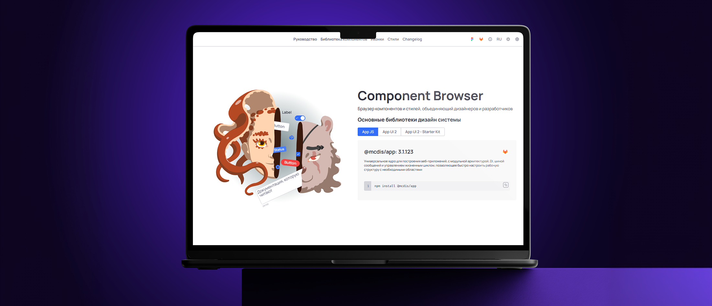
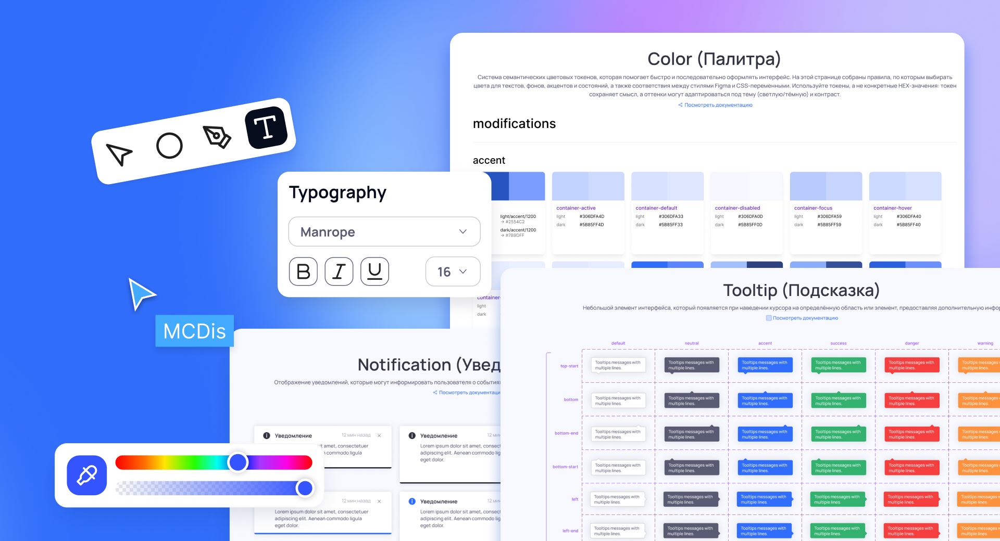
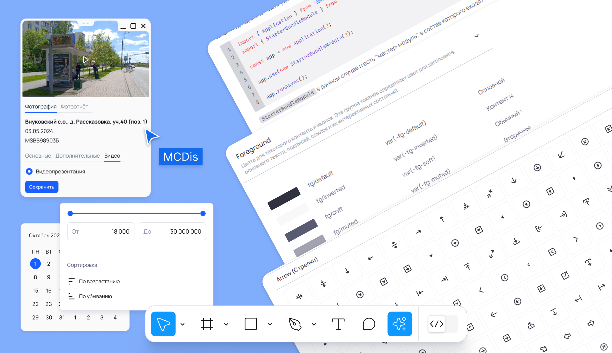
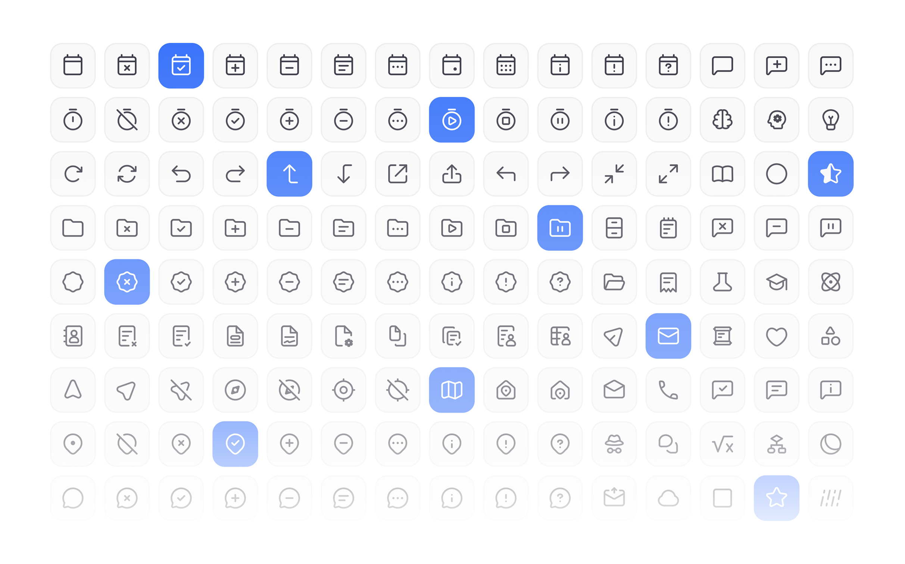
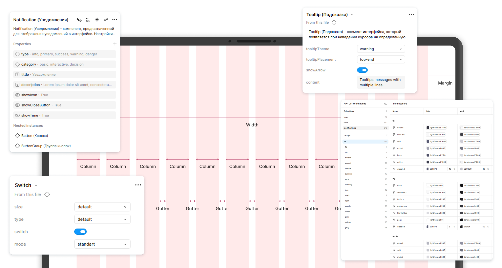
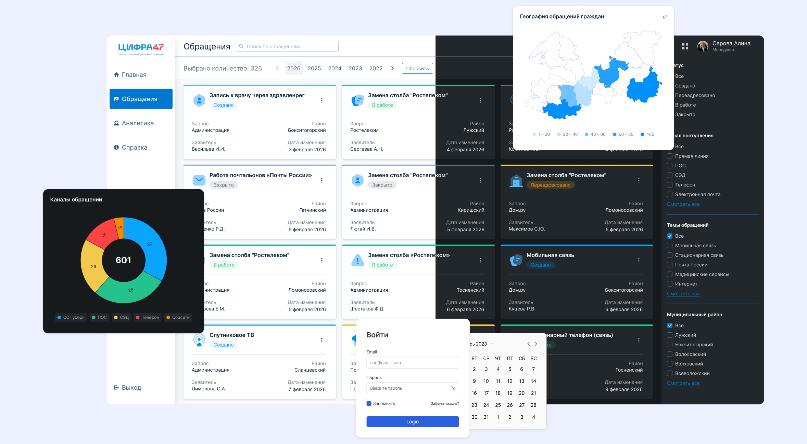

сегмент: B2G / внутренние системы
продукт: дизайн-система и UI-библиотека
платформа: desktop / mobile
Дизайн-система для 14 продуктов компании

Контекст
Команда параллельно развивала несколько внутренних продуктов, и интерфейсы постепенно начали расходиться. Компоненты дублировались, паттерны использовались по-разному, а новые экраны собирались практически с нуля.
С ростом количества сервисов увеличивалось время на поддержку интерфейсов и передачу макетов в разработку. Разным командам становилось сложнее поддерживать единый визуальный язык и переиспользовать решения между продуктами.
Задача проекта — выстроить единую дизайн-систему, которая объединит интерфейсы продуктов, упростит масштабирование и ускорит работу команд.
Результаты
- объединены интерфейсы 14 продуктов в единую систему
- сокращено время проектирования новых экранов примерно на 30–40%
- снижено количество UI-расхождений между продуктами
- уменьшилось количество правок на этапе разработки примерно на 20–25%
- ускорилась передача макетов в разработку за счёт переиспользуемых компонентов

Анализ и подход
-
В процессе анализа выявила:
- разные состояния и поведение компонентов
- расхождения в типографике, сетке и отступах
- дублирование компонентов между продуктами
- отсутствие единых правил для масштабирования интерфейсов
- сложность поддержки UI при росте количества сервисов
На основе аудита сформировала структуру системы и единые принципы построения интерфейсов.
Архитектура системы
Foundations (Базовые правила и токены системы)
- цветовая палитра и semantic colors
- типографика и scale
- сетка, spacing и layout-принципы
- состояния интерактивных элементов
- правила адаптивности и поведения компонентов
Components (Библиотека переиспользуемых компонентов)
- кнопки и поля ввода
- таблицы и формы
- модальные окна и уведомления
- фильтры и элементы навигации
- состояния компонентов и вариативность
Patterns и Templates (Для типовых сценариев собраны готовые UI-паттерны)
- таблицы и аналитические экраны
- формы создания и редактирования
- dashboard-модули
- шаблоны типовых страниц
Это позволило ускорить сборку новых интерфейсов и снизить количество повторяющихся решений.


Практика внедрения
Организация Variables Выстроила единую структуру variables для цветов, типографики, отступов и состояний компонентов. Это упростило поддержку интерфейсов и позволило быстрее масштабировать решения между продуктами.
Компоненты и состояния Для ключевых компонентов были собраны единые состояния и правила поведения: hover, active, disabled, loading, error. Это снизило количество расхождений между макетами и реализацией.
Шаблоны интерфейсов В систему вошли готовые шаблоны таблиц, форм, карточек и аналитических экранов. Команда смогла быстрее собирать новые сценарии без повторного проектирования типовых решений.
Единый визуальный язык Система объединила интерфейсы 14 продуктов через общие принципы типографики, сетки и компонентов. Интерфейсы стали визуально консистентнее и проще в поддержке.
Поддержка разработки Переиспользуемые компоненты и единые naming-правила упростили коммуникацию между дизайном и разработкой и сократили количество уточнений при реализации.

Моя роль
- аудит существующих интерфейсов
- проектирование структуры дизайн-системы
- создание библиотеки компонентов
- формирование принципов и правил использования
- организация variables и токенов
- документация компонентов и паттернов
- внедрение системы в процессы команды
Результаты
- объединены интерфейсы 14 продуктов в единую систему
- сокращено время проектирования новых экранов примерно на 30–40%
- снижено количество UI-расхождений между продуктами
- уменьшилось количество правок на этапе разработки примерно на 20–25%
- ускорилась передача макетов в разработку за счёт переиспользуемых компонентов

Инсайты проекта
Этот проект показал, что дизайн-система раскрывается сильнее всего, когда становится частью ежедневной работы команды. Единые правила, компоненты и шаблоны помогают быстрее собирать интерфейсы, спокойнее масштабировать продукты и сохранять общее ощущение качества.
Главный эффект дала не сама библиотека, а общий язык между дизайном и разработкой. Токены, компоненты и шаблоны стали опорой, вокруг которой проще принимать решения и развивать продукты без хаоса.